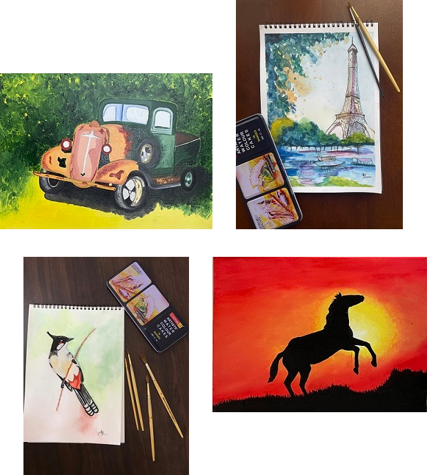

Master of Science in Computer Science
Aug 2026 - May 2028 (Expected)
I’m a software engineer focused on backend, cloud, and applications powered by RAG, currently at J.P. Morgan Chase and soon heading to USC for my MS in Computer Science.

Aug 2026 - May 2028 (Expected)
Aug 2020 - Jan 2024 / CGPA: 8.75/10 / First Class with Distinction
Extended a RAG application with client-in-context workflows across five specialized sub-agents, improving response relevance for nearly 200 financial advisors asking client-specific questions with real-time data retrieval.
Worked across backend, cloud, and data modernization for private banking systems, including Spring Boot microservices, AWS Lambda ETL pipelines, RAG advisor workflows, and high-volume reporting tools.
Optimized an internal query-language-to-SQL parser using Spring Boot, lowered response latency, added Databricks SQL dialect support, and built nested data retrieval with Apache Calcite.
Full-stack platform enabling remote tracking and counselling of mothers in rural India.
Travel website with a custom scraped Hotels API supporting search and booking across Indian cities.
A simple Discord bot built for the Code Innovation Hackathon.
Python game built with reference to Eric Matthes' Python Crash Course, then extended with additional features.
Designed and fine-tuned an intent detection module to classify legal queries and generate accurate Cypher queries for retrieving case details from a Neo4j-based legal property graph.
Enabled intent-based retrieval of 9,377 Supreme Court cases using Wit.ai and Neo4j, achieving an intent detection F1 score of 0.89 while improving accessibility for lawyers and the public.
April 2026
Udemy course covering MongoDB, Express, React, and Node.js full-stack development
Google Developer Student Clubs, NIT Surat / 2022-23
Hack The Tank, 24-hour Pan-India Hackathon ft. Shark Tank India entrepreneurs / 100+ participants
Renesa, Media and Publication House, NIT Surat / 2022-23
